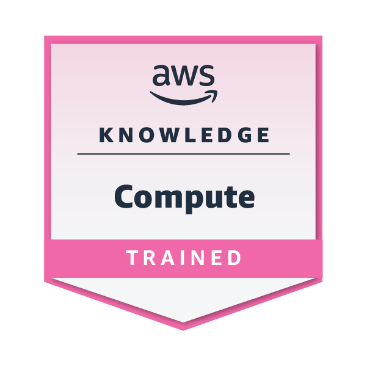

Certificates
AWS Cloud Essentials Badge

AWS Compute Badge

NVIDIA DLI – Deep Learning

Python (Kaggle)

Pandas (Kaggle)

Intro to Machine Learning (Kaggle)

Intermediate Machine Learning (Kaggle)

Intermediate Machine Learning (Kaggle)